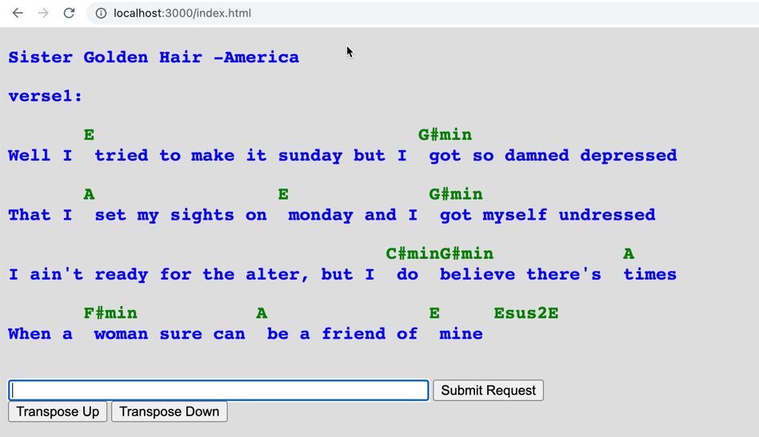
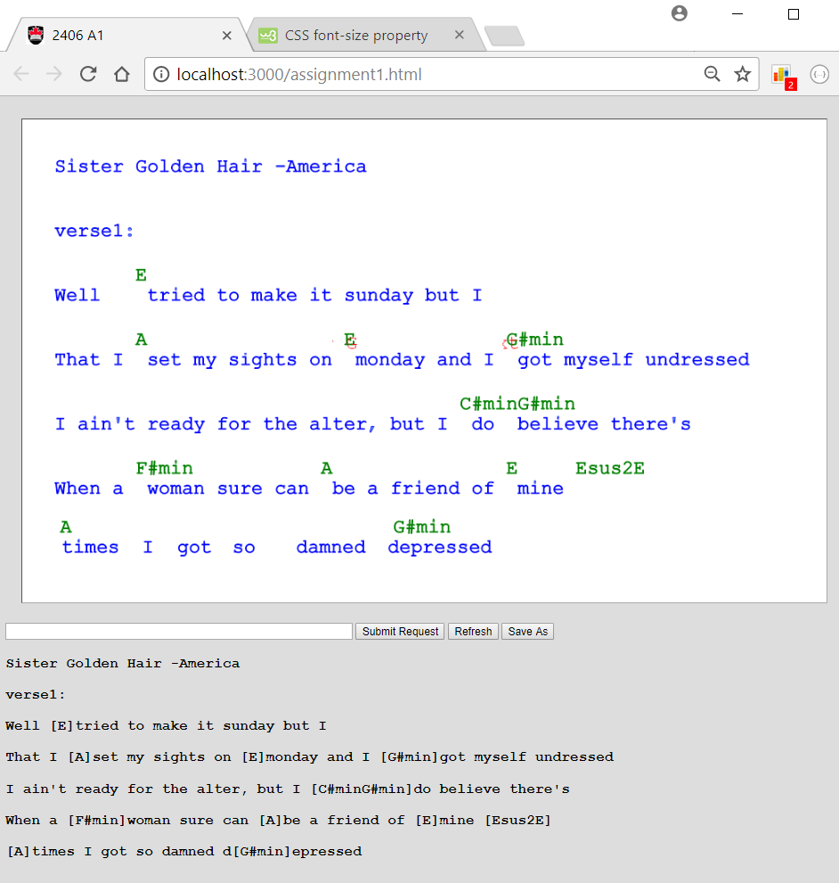

COMP 2406 Winter 2023 Assignment 2:
There Was A Young Man From Nantucket...
Due Wed. Mar. 1 by 10:00pm submitted to brightspace
Revisions:
Rev 2: I've added a critical intent requirement to make it clear that the server for this assignment must still use only the built in capabilities of node.js and NOT external npm modules.
Rev 1: I've changed the wording of critical submission requirement R0.2 to make it more clear what items MUST be in your Readme.txt file and what items are only recommended.
In this assignment you are going build a web app that incorporates not only html DOM elements but also objects rendered on a <canvas> element. Specifically, you will build an app that allows a user to solve a puzzle by dragging words around on the canvas with their mouse. You will then need to reconstruct the text their dragged words represent and have the server determine if the puzzle was solved correctly.
Marking: This assignment is based on 20 (green) design requirements numbered R1.1...R3.9 for a total of 40 marks.
Marks are awarded, or deducted, based on requirements as follows. Note: TAs will be running and evaluating your assignment code so we are not requesting a demonstration video for the four term assignments(only for the final project).
| Req Type | Assignment Grading |
|---|---|
| R0.x |
Critical Submission and Intent Requirements. Assignment gets 0 if any critical submission requirement (shown in red) is not met. |
| R0.x |
Good Practice Requirements. You lose 2 marks for each good practice requirement (shown in amber) not met. |
| Rx.x |
Design Requirements. You earn 2 marks for each design requirement (green) satisfied and well implemented; 1 mark if it's partly met or met but not well implemented; and 0 if it's not met or attempted. |
Submission and Good Programming Practice Requirements
The following requirements pertain to all your assignments regardless of what your application is supposed to do (i.e. regardless of the design requirements). These requirements are to ensure that your code is usable, readable, and maintainable.
R0.0 UNIQUENESS REQUIREMENT. The solution and code you submit MUST be unique. That is, it cannot be a copy of, or be too similar to, someone else's code, or other code found elsewhere. You are, however, free to use any code posted on our course website as part of our assignment solution. [Assignment mark =0 if this requirement is not met.]
R0.1 CODE SUBMISSION ORGANIZATION AND COMPILATION: You should submit all the code files and data files necessary to compile
and run your app. The TA's will execute your app by following the instructions you provide in the README.txt file. You must submit a single.zip formatted file to brightspace. (not .rar or
.tar or whatever). Though you are permitted to write code on Windows, Linux, or Mac OS the code must be generic enough to be OS agnostic. (See also the the requirement below about not submitting the node_modules
directory). Your code must work with at least a current Chrome browser and version 16.x.x of node.js
[Assignment mark =0 if this requirement is not met.]
R0.2 README FILE: Your submission MUST include a README.txt file (with .txt extension) telling the TA how to setup and run your app. The TA will NOT look into your code to figure out how to start up your app. Here are the critical things your README.txt MUST contain:
-
MUST: Your name, student number. (This is where you claim to be the author.)
-
MUST: If your code requires external modules (like npm modules) you must tell us what command to run to install them. (e.g.
npm installornpm install module_name) -
MUST: You must tell us how to launch your server. That is, what command to exectute to launch your code (e.g.
node server.js. ) -
MUST: You must tell us what URL to visit with the browser to use your app. (e.g. visit:http://localhost:3000/mytest.html?name=Louis.)
-
Recommended: Have your server output to the console what URLs we should visit with the browser.

-
Recommended: Version: node.js version number and operating system you tested on your code on.
-
Recommended: Version: node.js version number and operating system you tested on your code on.
If any of the MUST have items are missing we will not grade your assignment (the mark will be 0).
RECOMMENDED: The following are recommend but the assignment will still be graded if they are missing.
[Assignment mark =0 if this requirement is not met.]
R0.3 INTENT REQUIREMENT: The solution
and code you submit must comply with the intent of the assignment. For example if you are required to build a node.js/javascript server and you choose to build an apache/PHP server instead you will have violated the intent of the assignment
even though the user input-output experience might be the same. As another example, if you are asked to build a "thick client" solution where the server just supplies data and the browser renders it but you build a "thin
client" solution where the server renders all the HTML pages you will have violated the intent even though the user's experience would look the same.
[Assignment mark =0 if this requirement is not met.]
R0.4 VARIABLE AND FUNCTION NAMES: All of your variables and functions should have meaningful names that reflect their purpose. Don't follow the convention common in math courses where they say things like: "let x be the number of customers and let y be the number of products...". Instead call your variables numberOfCustomers or numberOfProducts. Your program should not have any variables called "x" unless there is a good reason for them to be called "x". (One exception: It's OK to call simple for-loop counters i,j and k etc. when the context is clear and VERY localized.) Javascript variables don't have types which can help clarify their meaning so choosing good names is even more important. Many functions in javascript are annonymous (have no name) and so the name of the variable that refers to them is even more important.
Remember: any fool can write code that a computer will understand; the goal is to write code that we can understand. [Minus 2 marks from assignment if this requirement is not met.]
R0.5 JAVASCRIPT IN STATIC HTML: Your static html pages should NOT make direct reference to javascript functions. Don't do something like the following:
<button type="button" onclick="myFunction()">Try it</button>
Instead do something like this:
<button type="button" id="submit_button">Try it</button>
and elsewhere in your javascript file say:
document.getElementById('submit_button').addEventListener('click', myFunction)
[Minus 2 marks from assignment if this requirement is not met.]
R0.6 COMMENTS: Comments in your code must coincide with what the code actually does. It is a common bug to modify or cut-and-paste code and forget to modify the comments and so you end up with comments that say one thing and code that actually does another. Don't over-comment your code - instead choose good variable names and function names that make the code "self commenting". Don't be reluctant to create local variables so that the variable name provides more clarity -there is no prize for having the fewest lines of code. [Minus 2 marks from assignment if this requirement is not met.]
R0.7 MODULARIZATION: Your client-side and server-side javascript should not be in two giant files. Break you client-side javascript into smaller manageable and readable files and include them individually with <script> tags in your html document. On the server-side use requires or imports appropriately to organize your code into managable size files. [Minus 2 marks from assignment if this requirement is not met.]
R0.8 BLOATED CODE: If your assigment uses external modules installed with npm, DON'T submit the node_modules directory with your code (it's potentially huge). Remove that directory and only submit the package.json and package-lock.json files. The TAs will use these files to intall the required modules. NPM modules are platform specific and must be reinstalled on the markers platform (they would have to remove your node_modules directory). [Minus 2 marks from assignment if this requirement is not met.]
R0.9 CITATION REQUIREMENT: If you use code from other sources you should cite the source in comments that appear with the code. If the source is an internet website then put the URL in the comments. You may use bits of code from outside sources but this may not form the complete solution you are handing in.You DON'T have to cite demo code we provide on the course web site or with tutorials and assignments, however that code should not be used for things you post publicly (like on GitHub). [Minus 2 marks from assignment if this requirement is not met.]
VERY IMPORTANT: Any sample code fragments provided may have bugs (although none are put there intentionally). You must be prepared to find errors in the requirements and sample code. Please report errors so they can be fixed and an assignment revision posted.
Application Design Requirements
This is a continuation of work started in Tutorial 3. It is intended that you use your answer code or our answer code for Tutorial 3 as a starting point. In that tutorial you had text files of song lyrics served to a user as randomly scrambled words on a canvas which they could drag around with the mouse. Here we want you serve the client scrambled words that represent a poem or phrase and expect the user to drag the words into the correcty phrase order
1) Server-Side Requirements
Note the server for this assignment can be based on the server code from Tutorial 03 and should only need minor modification.
R0.3 The server for this assignment must use only the built in capabilites of node.js and NOT use any external npm modules yet.
R1.1 The server should be hosted on port 3000 and be reachable from a browser on the same machine by visiting http://localhost:3000/index.html (Your ReadMe.txt file should still remind the TA what specific URL to use to test your application.)
R1.2 The server should have a puzzles directory of .txt files. The puzzles directory should contain at least the following files: puzzle1.txt, puzzle2.txt, and puzzle3.txt. Each files should contain the text of a puzzle phrase or poem that the user is meant to reconstruct.
R1.3 puzzle1.txt should be a text file with the following four lines of text. (That way the TAs will have an obvious known puzzle to try and solve with your app.) The others can be more interesting.
Roses are red Violets are blue I like javascript And so will you
R1.4 puzzle2.txt should be a text file containing a limerick.
R1.5 puzzle3.txt should contain single letters in which the user is meant to reconstruct a single word. Note the letters can be implemented with single character strings (as opposed to actual characters).
You may add additional puzzle files of your own if you want.
R1.6 Your puzzles should be suitable for children and not contain vulgar or inappropriate phrases.
R1.7 You should be able to add new puzzles but simply adding files to the puzzles directory. There should be no modification of the server code required to do this and you should be able to do this while the server is running. [The TAs will be dragging their own puzzle file into your puzzles folder while your server is running.]
R1.8 The server should not send the puzzle words to the client in the correct order. That is, if the client code was to print the words from the server on its console the words should not be in the intended order. There should be no way of inspecting anything on the client browser (source code or console output) that would give away the intended word order of the puzzle. The client should also NOT be able to see the puzzle text using a URL like http://localhost:3000/puzzles.puzzle1.txt. That is, puzzles should NOT be accessible to the client as a static file request. This suggests that the puzzles folder should NOT be in the folder used to serve static files to the client.
R1.9 Your client or server code should not have any references to songs in its code. That is, if you base your code on the tutorial 3 server you must rename all code items that might pertain to songs to pertain to puzzles instead. Variable and function names must reflect what this code is actually about.
2) Client-Server Data Exchange
R2.1 The server should send the html and other files representing the app when the user visits http://localhost:3000/index.html
R2.2 The exchange of puzzle data between client and server should be in the form http POST messages and data should be exchanged as JSON object strings.
3) Client Requirements
R3.1 The client webpage should have an HTML5 canvas area, a text input, and the following buttons: "Get Puzzle", "Solve Puzzle".
R3.2 The client should be able to request a puzzle from the server by typing the "puzzle1", "puzzle2", or "puzzle3" in the text field and clicking the "Get Puzzle" button.The client should then display the words from the corresponding text file stored on the server. That is, the client should make a request to the server for the contents of the appropriate file. The words from the file should appear on the clients canvas. When a puzzle is loaded the text field should be cleared but the name of the puzzle should appear as html text at the bottom of the interface. See image below.

R3.3 When a puzzle is loaded the words shown on the canvas should be randomly located on the canvas. All the words on the canvas must be completely, or mostly, within the canvas boundary. Words should not be outside, or mostly outside, the canvas boundary.
R3.4 The user should be able to drag the words around with a their mouse. Moreover, the user should be able to drag from anywhere within the word and not just at the begining of the word.
R3.5 When the user presses the Solve Puzzle button the current organization of the words should be shown as lines of HTML text. That is, should reflect how the user dragged the words to form lines of text. (This will be the fun part -trying to figure out from the position of words which ones belong to the same line of text and their order in the line.) You need to preserve the apparent lines of text the user has created and not just the order of all the words. Also the words on the canvas that are considered to form a line should get vertically aligned - that way you can use the solve puzzle button the "clean up the canvas". You can see that behaviour in the demonstration video provided with the assignment.

R3.6 The colouring of the html text of the client solutions should indicate whether their current solution is correct or not. The text should be red if the puzzle solution is still incorrect and should be green if the puzzle has been correctly solved. The colouring of the text must be based on CSS styling.
R3.7 When dragging words to form lines to text the alignment should not have to be too exact. That is, it is unrealistic to expect users to get words exactly in a line. There must be an appropriate slack in what you accept as a valid line of text.
R3.8 Determining whether a puzzle has been solved correctly must be done by the server based on the clients words being sent to it. The server would then respond with an indicator of whether the words were in the correct order or not. Note to be correct only the words need to be in a correct order. The client does not have to preserve the lines. For example both of the following would be considered a correct solution to puzzle1:
Rose are red Violets are blue We like javascript And so will you
Rose are red Violets are blue We like javascript And so will you
R3.9 The user should be able to request and load a new puzzle at any time by typing puzzle1, puzzle2, etc. in the textfield and pressing the Get Puzzle button or hitting the enter key. That is, the client should not have to first solve a puzzle before loading a new one.
Demonstration Video
Here is a YouTube demonstration video showing the intended behaviour and discussing the assignment requirements.